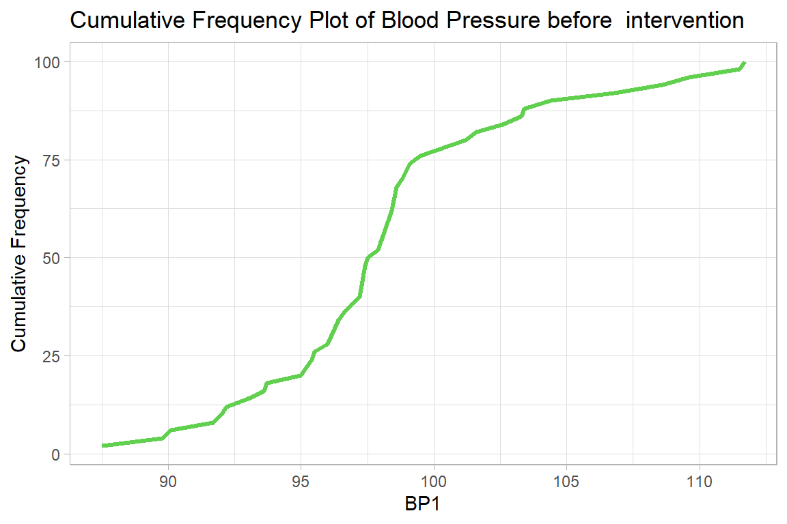
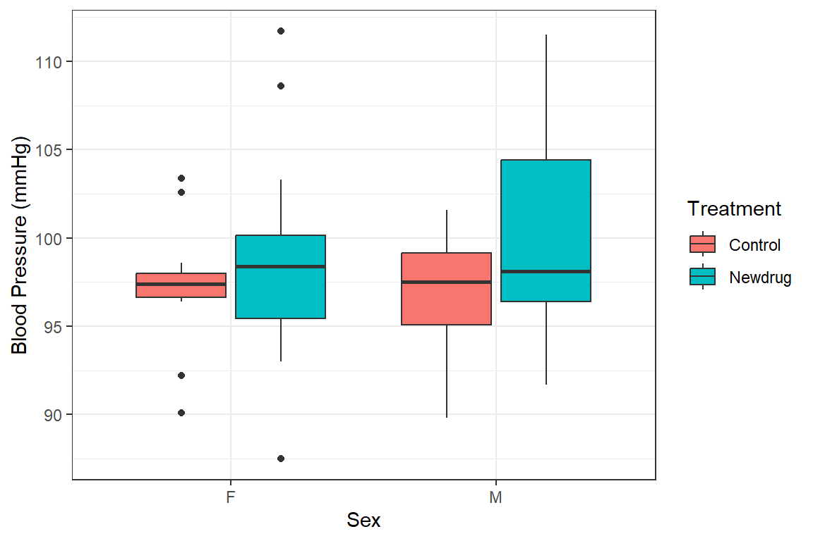

10 Descriptive Statistics of Continuous Data
For this section, we will use the NewDrug_clean.dta dataset
newdrug <-
haven::read_dta("./Data/NewDrug_clean.dta") %>%
mutate(sex = haven::as_factor(sex), treat = haven::as_factor(treat)) %>%
haven::zap_labels()
newdrug %>% summary()
id treat age sex
Length:50 Control:22 Min. :45.00 F:26
Class :character Newdrug:28 1st Qu.:57.25 M:24
Mode :character Median :63.00
Mean :61.48
3rd Qu.:65.00
Max. :75.00
bp1 bp2 bpdiff
Min. : 87.50 Min. :78.00 Min. : 0.500
1st Qu.: 95.62 1st Qu.:85.22 1st Qu.: 4.800
Median : 97.70 Median :88.15 Median : 8.250
Mean : 98.30 Mean :88.60 Mean : 9.704
3rd Qu.: 99.40 3rd Qu.:92.10 3rd Qu.:13.700
Max. :111.70 Max. :99.70 Max. :26.300 10.0.1 Single continuous variable
10.0.1.1 Measures of Central Tendency & Dispersion
These include mean and median and are displayed below
newdrug %>%
summarise(
mean.bp1 = mean(bp1),
median.bp1 = median(bp1),
sd.bp1 = sd(bp1),
min.bp1 = min(bp1),
max.bp1 = max(bp1),
iqr = IQR(bp1)
) | mean.bp1 | median.bp1 | sd.bp1 | min.bp1 | max.bp1 | iqr |
|---|---|---|---|---|---|
| 98.3 | 97.7 | 5.17 | 87.5 | 112 | 3.78 |
Alternatively
newdrug %$%
psych::describe(bp1)| vars | n | mean | sd | median | trimmed | mad | min | max | range | skew | kurtosis | se |
|---|---|---|---|---|---|---|---|---|---|---|---|---|
| 1 | 50 | 98.3 | 5.17 | 97.7 | 97.9 | 2.97 | 87.5 | 112 | 24.2 | 0.696 | 0.617 | 0.731 |
And to show the interquartile range we do the following.
| vars | n | mean | sd | median | trimmed | mad | min | max | range | skew | kurtosis | se | IQR | Q0.25 | Q0.75 |
|---|---|---|---|---|---|---|---|---|---|---|---|---|---|---|---|
| 1 | 50 | 98.3 | 5.17 | 97.7 | 97.9 | 2.97 | 87.5 | 112 | 24.2 | 0.696 | 0.617 | 0.731 | 3.78 | 95.6 | 99.4 |
10.0.1.2 Graphs - Histogram
newdrug %>%
ggplot(aes(x = bp1)) +
geom_histogram(bins = 7, col="black", alpha = .5, fill = "red") +
labs(title = "Histogram of Blood Pressure before intervention",
x= "BP1")+
theme_light()
10.0.1.3 Graphs - Boxplot and violin plot
newdrug %>%
ggplot(aes(y = bp1)) +
geom_boxplot(col="black",
alpha = .2,
fill = "blue",
outlier.fill = "black",
outlier.shape = 22) +
labs(title = "Boxplot of Blood Pressure before intervention",
y = "BP1")+
theme_light()
10.0.1.4 Graphs - Density plot
newdrug %>%
ggplot(aes(y = bp1)) +
geom_density(col="black", fill = "yellow", alpha=.6) +
labs(title = "Density Plot of Blood Pressure before intervention",
y = "Blood Pressure before intervention")+
coord_flip() +
theme_light()
10.0.1.5 Graphs - Cumulative Frequency plot
newdrug %>%
group_by(bp1) %>%
summarize(n = n()) %>%
ungroup() %>%
mutate(cum = cumsum(n)/sum(n)*100) %>%
ggplot(aes(y = cum, x = bp1)) +
geom_line(col=3, linewidth=1.2)+
labs(
title = "Cumulative Frequency Plot of Blood Pressure before intervention",
x = "BP1",
y = "Cumulative Frequency")+
theme_light() 
10.0.2 Multiple Continuous variables
10.0.2.1 Measures of Central tendency & Dispersion
newdrug %>%
select(where(is.numeric)) %>%
psych::describe()| vars | n | mean | sd | median | trimmed | mad | min | max | range | skew | kurtosis | se |
|---|---|---|---|---|---|---|---|---|---|---|---|---|
| 1 | 50 | 61.5 | 6.51 | 63 | 62 | 4.45 | 45 | 75 | 30 | -0.602 | 0.157 | 0.92 |
| 2 | 50 | 98.3 | 5.17 | 97.7 | 97.9 | 2.97 | 87.5 | 112 | 24.2 | 0.696 | 0.617 | 0.731 |
| 3 | 50 | 88.6 | 4.56 | 88.2 | 88.5 | 4.52 | 78 | 99.7 | 21.7 | 0.252 | -0.236 | 0.645 |
| 4 | 50 | 9.7 | 6.2 | 8.25 | 8.95 | 5.49 | 0.5 | 26.3 | 25.8 | 0.931 | 0.243 | 0.877 |
To illustrate graphing multiple continuous variables we use the 2 bp variables
bps <-
newdrug %>%
select(bp1, bp2) %>%
pivot_longer(
cols = c(bp1, bp2),
names_to = "measure",
values_to = "bp") %>%
mutate(
measure = fct_recode(
measure, "Pre-Treatment" = "bp1", "Post-Treatment" = "bp2"
)
)Next, we create multiple density plots
bps %>%
ggplot(aes(y = measure, x = bp, fill = measure)) +
ggridges::geom_density_ridges2( col="black", alpha = .5, scale=1,
show.legend = F) +
labs(x = "Blood pressure (mmHg)",
y = "Density",
fill = "Blood Pressure") +
theme_bw()
Picking joint bandwidth of 1.52
bps %>%
ggplot(aes(y = measure, x = bp, fill = measure))+
geom_boxplot(show.legend = FALSE) +
labs(y = NULL,
x = "Blood Pressure",
fill = "Blood Pressure") +
coord_flip()+
theme_light() 
bps %>%
ggplot(aes(y = measure, x = bp, fill = measure))+
geom_violin(show.legend = FALSE) +
coord_flip()+
theme_light() 
10.1 Continuous by a single categorical variable
10.1.1 Summary
We do this with one variable.
newdrug %>%
group_by(treat) %>%
summarize(mean.bp1 = mean(bp1),
sd.bp1 = sd(bp1),
var.bp1 = var(bp1),
se.mean.bp1 = sd(bp1)/sqrt(n()),
median.bp1 = median(bp1),
min.bp1 = min(bp1),
max.bp1 = max(bp1)) %>%
ungroup()| treat | mean.bp1 | sd.bp1 | var.bp1 | se.mean.bp1 | median.bp1 | min.bp1 | max.bp1 |
|---|---|---|---|---|---|---|---|
| Control | 97.1 | 3.56 | 12.7 | 0.76 | 97.4 | 89.8 | 103 |
| Newdrug | 99.2 | 6.05 | 36.6 | 1.14 | 98.2 | 87.5 | 112 |
10.2 Continuous by multiple categorical variables
10.2.1 Summary
This can be done as below.
newdrug %>%
group_by(treat, sex) %>%
summarize(mean.bp1 = mean(bp1),
sd.bp1 = sd(bp1),
var.bp1 = var(bp1),
se.mean.bp1 = sd(bp1)/sqrt(n()),
median.bp1 = median(bp1),
min.bp1 = min(bp1),
max.bp1 = max(bp1),
.groups = "drop") | treat | sex | mean.bp1 | sd.bp1 | var.bp1 | se.mean.bp1 | median.bp1 | min.bp1 | max.bp1 |
|---|---|---|---|---|---|---|---|---|
| Control | F | 97.2 | 3.82 | 14.6 | 1.15 | 97.4 | 90.1 | 103 |
| Control | M | 97 | 3.47 | 12.1 | 1.05 | 97.5 | 89.8 | 102 |
| Newdrug | F | 98.6 | 6.01 | 36.1 | 1.55 | 98.4 | 87.5 | 112 |
| Newdrug | M | 100 | 6.25 | 39.1 | 1.73 | 98.1 | 91.7 | 112 |
And this can be presented in a boxplot below
newdrug %>%
ggplot(aes(y = bp1, x = sex, fill = treat)) +
geom_boxplot()+
labs(
y = "Blood Pressure (mmHg)",
x = "Sex",
fill = 'Treatment') +
theme_bw()